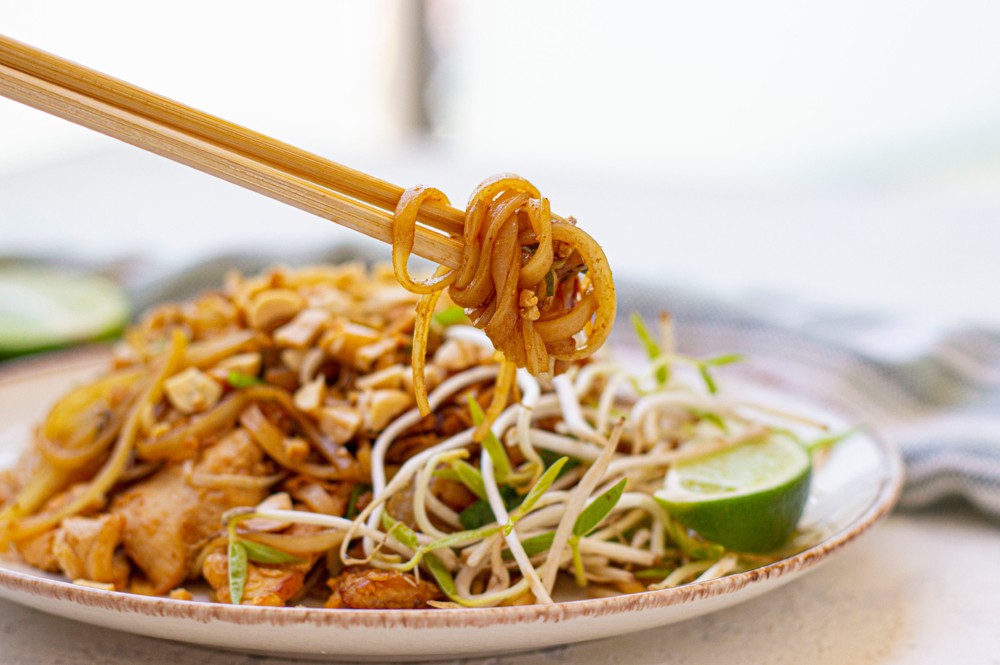

Chicken Pad Thai

Description
I made this chicken pad Thai with peanut sauce for my wife on her birthday and she loved it. Make sure to pick up medium rice noodles.
Ingredients
- 1 (8 ounce) package medium-sized dried rice noodles
- 4 tablespoons soy sauce
- 4 teaspoons cornstarch
- 1.5 cups 1/2-inch wide strips of raw chicken breast
- 1/4 cup white sugar
- 1/4 cup fish sauce
- 2 tablespoons tamarind juice
- 3 tablespoons canola or peanut oil, divided
- 3/4 teaspoon minced garlic
- 2 eggs
- 3/4 tablespoon white sugar
- 3/4 teaspoon salt
- 3/4 cup chopped unsalted dry-roasted peanuts
- 1/2 teaspoon chili powder
- 1/4 cup chopped fresh chives
- 1 cup fresh bean sprouts
Steps
- Place noodles in a large bowl and cover with cold water. Soak until soft, 30 to 50 minutes. Drain and set aside.
- Combine soy sauce and cornstarch in a bowl; stir to dissolve cornstarch. Place chicken in a separate bowl and pour soy sauce mixture on top. Stir well and set aside.
- Mix together 1/4 cup sugar, fish sauce, tamarind juice, and lime juice in a saucepan over medium heat and simmer for about 5 minutes. Keep sauce warm.
- Heat 1 tablespoon of oil in a second skillet over medium-high heat and add chicken. Cook until no longer pink in the middle and juices run clear, 5 to 10 minutes. Reduce heat and keep chicken warm.
- Heat remaining 2 tablespoons oil in a large wok over medium heat. Add garlic and eggs, stirring to scramble, about 5 minutes. Add cooked chicken and stir until well mixed. Add drained noodles and stir until warmed through, 5 to 10 minutes more.
- Stir sauce, 3/4 teaspoon sugar, and salt into noodle mixture in the wok. Stir in peanuts and chili powder. Remove from heat and top with chives. Serve pad thai with bean sprouts on the side.